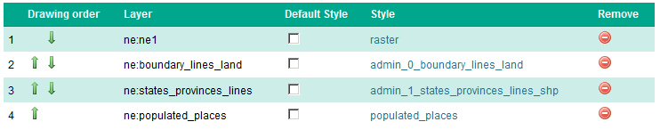
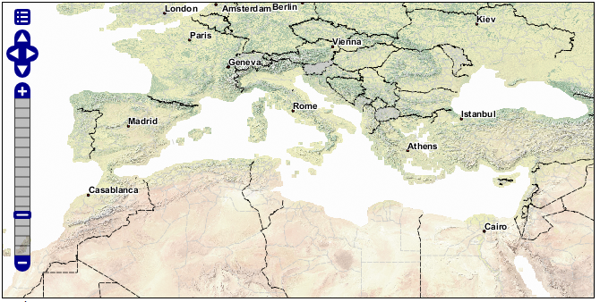

1.2. Course Data¶
1.2.1. Natural Earth¶
The Natural Earth dataset is a free collection of vector and raster data published by the North American Cartographic Information Society to encourage mapping.
For this course we will be using the Natural Earth cultural and physical vector layers backed by a raster shaded relief dataset.
Natural Earth¶
The quickstart Natural Earth styling has been exported from QGIS and cleaned up in uDig for use in GeoServer.
1.2.2. Digital Elevation Model¶
A digital elevation model records height information for visualisation and analysis. We are using a dataset derived from the USGS GTOPO30 dataset.
Digital Elevation Model¶
The GeoServer “dem” styling has been used for this dataset.
1.2.3. Configuration¶
Note
In a classroom setting GeoServer has been preconfigured with the appropriate data directory.
To set up GeoServer yourself:
Download and unzip the following into your data directory:
This will produce a
rasterandvectorfolder referenced in the following steps.Optional default SLD styles:
Use the Importer to add and publish -
the following TIF Coverage Stores:
dem/W100N40.TIF
ne/ne1/NE1_HR_LC_SR.tif
the following directories of shape files:
ne/ne1/physical
ne/ne1/cultural
Cleaning up the published vector layers:
Layer names have been shortened for publication - the
ne_10m_admin_1_states_provinces_lines_ship.shpis published namedstates_provinces_shpUse
EPSG:4326as the spatial reference systemOptional: Appropriate SLD styles have been provided (from the uDig project)
To clean up the published raster layers:
The NE1 GeoTiff is styled with the default
rasterstyleThe usgs:dem GeoTiff is styled with the default
DEMstyle
Optional: create a
basemapgroup layer consisting of:This offers a combined layer, forming a cohesive base map.
